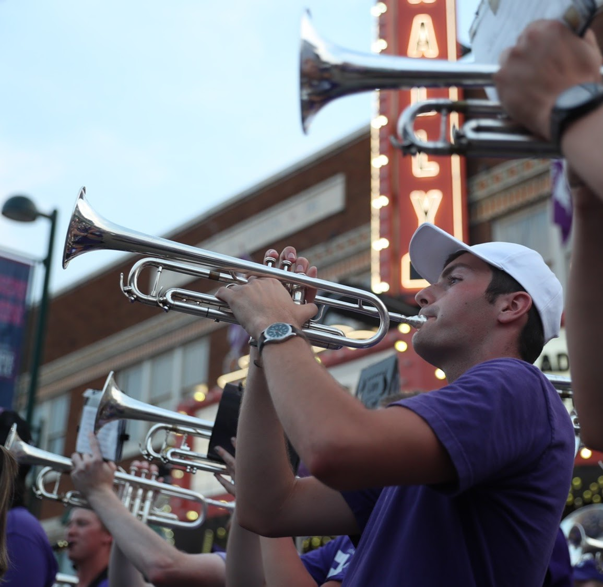

About Me

Hello world, my name is Daniel Bell and I'm from Louisburg, Ks. Currently, I'm a senior in Computer Science from
Kansas State University who is focusing on software engineering and development. I originally learned how to program by experimenting with
microcontrollers like the arduino. This taught be the basics programming and C/C++. Upon starting college, I recieved a formal education in Object
Oriented Programming. Because of this, C# and Python are still my best languages. That said, I wanted to expand my skill set beyond what
we were taught in class. In 2017, I began self study of Web Development technologies such as HTML/CSS, JavaScript, React, Node.js, and SQL.
Outside of my work, I'm an avid outdoorsman and musician. I've hiked through many national parks both in the US and abroad. The picture on
the left is from a trek across Iceland in the summer of 2018. In regards to music, I've been playing the trumpet for over ten years now.
The pinnacle of this has been the opritunity to perform at major events such as the NYC Veteran's Day Parade, the Rose Bowl, and many appearances
with the Kansas State Marching Band.